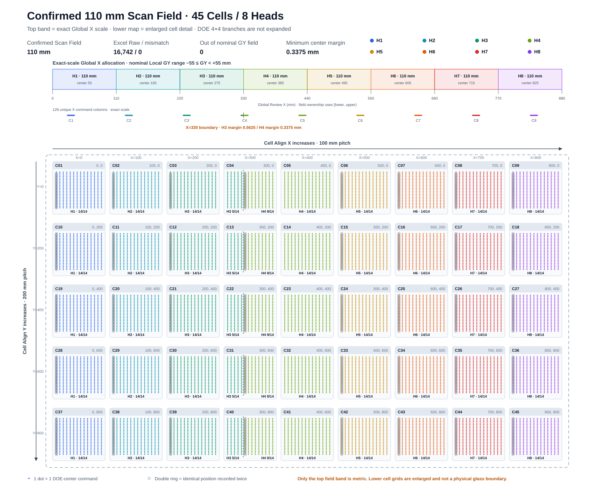

A3 Laser Driller · Coordinate Generation Verification
가공좌표 생성 최종 분석보고서
Pitch 10 px · DOE 중심 Offset 0.3375 mm · Scan Field 110 mm
첨부 Excel의 레시피 조건과 가공 좌표 두 탭을 전수 분석하고, 8개 Head의 Raw 좌표쌍 16,742개를 순번까지 재현한 결과입니다. 정답은 ‘가공 좌표’ 탭의 16,742개이며, 15,750개는 같은 공간점을 한 번만 센 분석 참고값입니다. 사용자 확정 사양 Scan Field Width=110 mm를 적용해 GY(Review)축 명령 중심의 보정 전 명목 Field 수용성을 검증했습니다. DOE 4×4의 명목 빔 간격 0.225 mm와 패턴 중심 Offset 0.3375 mm를 반영해 중심 명령좌표와 실제 16개 Hole의 관계를 해석했습니다.
전체 기판 가공좌표 한눈에 보기
상단 정척 Band에는 Global X=0…880 mm를 110 mm씩 나눈 8개 명목 Scan Field와 실제 X 명령열을 표시했습니다. 하단 확대도에는 45개 Cell의 14×25 고유 명령 중심을 Head별 색상으로 표시했습니다. 이중 원은 동일 위치가 Excel Raw에 연속 두 번 기록된 Lane 시작점이며, Cell 4·13·22·31·40은 Global X=330 mm 경계에서 H3 5열 / H4 9열로 분할됩니다.

1. 가공 중심 Pitch 정의
Pitch는 현재 DOE 중심 명령좌표에서 다음 DOE 중심 명령좌표까지 이동하는 원본 Pixel 개수입니다. DOE 내부 Hole 간격과 같은 값은 아니지만, 현재 4×4 구성에서는 중심 간격을 축당 분기 수 4로 나누어 명목 Hole 간격을 계산합니다.
가공 중심 간격
현재 중심에서 다음 중심까지의 Scanner 명령좌표 간격은 0.9 mm입니다.
DOE 4×4 가공홀
명목 배열은 0.225 mm 간격이며, 실제 장비 좌표에는 DOE Branch별 X/Y Calibration과 회전을 추가 적용합니다.
2. 첨부 Excel 구조와 입력조건
| 구분 | 레시피 조건 | 가공 좌표 | 해석 |
|---|---|---|---|
| Excel XML 선언 범위 | B1:O92 실제 비어있지 않은 값: B1:G92 | A1:P3003 | 2개 탭 |
| 비어있지 않은 셀 | 234 | 33,510 | 가공 좌표는 8 Head × 2열 구조 |
| 수식 셀 | 3 | 0 | 가공 좌표는 모두 정적 값 |
| 병합 | 없음 | Head 제목 8개 | A3:B3 … O3:P3 |
| 도형·차트·그림 | 없음 | 없음 | 분석은 셀 값과 첨부 설명 이미지 기준 |
2.1 좌표 생성에 사용된 주요 Recipe
| 셀 | 항목 | 값 | 좌표 생성에서 확인된 역할 | 상태 |
|---|---|---|---|---|
| C3 | 픽셀 크기 | 0.09 mm/px | 피치 [px]를 거리 [mm]로 변환 | 명시 |
| C4 | X방향 픽셀 수 | 144 px | 현재 14개 X방향 명령 격자 생성 | 명시 |
| C5 | Y방향 픽셀 수 | 256 px | 현재 25개 Y방향 명령 격자 생성 | 명시 |
| C6 | 축당 DOE 분기빔 개수 | 4개/축 | DOE 4×4 = 중심당 16 Hole, 명목 빔 간격 계산의 제수 | 확정 |
| C7 | 가공 중심 피치 | 10 px | 다음 중심까지의 픽셀 간격 | 확정 |
| C9:C11 | Cell 배치 | 9 × 5 = 45 | 45개 Cell Origin 생성 | 명시 |
| C13:C14 | Cell 기준점 간격 | X 100 / Y 200 mm | Cell X=0…800 mm, Y=0…800 mm | 명시 |
| C16:C18 | X 기준거리 구성값 | 5 + 15.5 + 5 mm | ESC Edge→Glass Edge + Glass Edge→Align Key + Glass 중심↔Scanner 중심 Offset | 명시 |
| C19 | Default Offset | 0 mm | X/Y 구분이 없는 공통 단일값, 비영(非0) 동작은 역산 불가 | 구조 부족 |
| C20 | 홀수·짝수열 거리 | 380 mm | 홀수 Head GX에 추가 | 명시 |
| C21 | MOF Buffer Offset | 120 mm | 모든 Head GX에 반영 | 명시 |
| C26 | DOE 패턴 중심 Offset | 0.3375 mm/축 | (가공 중심 간격 0.9 mm ÷ 4개) × 1.5간격; 첫 DOE Hole 중심에서 4×4 기하학적 중심까지의 X/Y 거리 | 확정 |
| C27 | 라벨 없음 | −55 mm | 확정 Scan Field 110 mm의 중심 원점 기준 하한(−110/2) | 사양 연계 확인 |
2.2 Recipe 탭의 실제 수식 3개
| 셀 | 한글 계산식 | Excel 수식 | 결과 |
|---|---|---|---|
| C9 | 전체 Cell 수 = X방향 Cell 수 × Y방향 Cell 수 | =C10*C11 | 45 Cell |
| C25 | X 기준거리 합계 = ESC Edge부터 Glass Edge까지 거리 + Glass Edge부터 Align Key까지 거리 + Glass 중심과 Scanner 중심 Offset 차이 | =C18+C17+C16 | 25.5 mm |
| C28 | H1 첫 가공 중심의 로컬 GY = X 기준거리 합계(C25) + DOE 패턴 중심 Offset(C26) + 스캔필드 하한값(C27) | =SUM(C25:C27) | −29.1625 mm |
3. 확정 Scan Field 110 mm를 반영한 좌표 재현 모델
아래 모델로 8개 Head의 Raw 좌표쌍 16,742개를 순번 포함 불일치 0개로 재현했습니다. 정답 출력은 16,742개이며, 같은 공간점을 한 번만 센 15,750개는 분석 참고값입니다. Scan Field Width 110 mm는 사용자 확정 사양이며, 중심 원점 기준 명목 Local 범위는 [−55,+55) mm입니다. 110 mm 간격의 논리 Field tile 배치는 Ground Truth와 일치하지만 실제 기계 Head 중심 간격과 Field overlap/gap은 설치 도면으로 별도 확인합니다.
3.1 중심 격자
현재 파일은 X방향 격자 번호 0…13, Y방향 격자 번호 0…24를 사용합니다.
설계 X방향 격자가 GY(Review)에, 설계 Y방향 격자가 부호 반전되어 GX(Stage)에 반영됩니다.
3.2 Head 선택과 GY 로컬·GX(Stage) 출력좌표
GX(Stage)는 Stage/MOF 절대성분을 포함하므로 Scanner Local GX 범위로 직접 해석하지 않습니다.
Head 전수 대조는 Cell 열 번호와 X방향 명령 격자 번호만 사용해
전역 X좌표 = 100 × (Cell 열 번호 − 1) + 25.8375 + 0.9 × X방향 격자 번호로 독립 계산했습니다.
16,742개 모두 Excel Head와 일치하며, Excel GY로 복원한 전역 X좌표와의 차이도 0 mm입니다.
3.3 수식 항목 한글 정의
| 수식 항목 | 현재 값·범위 | 의미 |
|---|---|---|
| 픽셀 크기 | 0.09 mm/px | 설계 Pixel 1개가 나타내는 실제 거리 |
| 가공 중심 피치 | 10 px | 현재 DOE 중심 명령에서 다음 중심 명령까지의 Pixel 수 |
| 가공 중심 간격 | 0.9 mm | 픽셀 크기 × 가공 중심 피치로 계산한 실제 이동 거리 |
| 축당 DOE 분기빔 개수 | 4개/축 | 가공 중심 간격을 나누어 축별 명목 빔 간격을 계산 |
| DOE 명목 빔 간격 | 0.225 mm | 가공 중심 간격 0.9 mm ÷ 축당 분기빔 4개 |
| Cell 기준 X/Y좌표 | X 0…800 / Y 0…800 mm | 각 Cell의 전역 배치 기준점 |
| X 기준거리 합계 C25 | 25.5 mm | ESC Edge→Glass Edge, Glass Edge→Align Key, Glass 중심↔Scanner 중심 Offset의 합계 |
| DOE 패턴 중심 Offset C26 | 0.3375 mm/축 | 첫 DOE Hole 중심에서 4×4 기하학적 중심까지의 X/Y 거리: 0.225 mm × 1.5간격 |
| X/Y방향 격자 번호 | X 0…13 / Y 0…24 | Cell 내부 가공 중심의 0 기준 순번 |
| 전역 X/Y좌표 | mm | Cell 배치와 내부 격자를 합산한 기판 기준 가공 중심 |
| Head 스캔필드 중심 X좌표 | 55 + 110×(Head−1) mm | 각 110 mm Scan Field의 전역 중심 |
| 스캐너 로컬 GY | −55≤GY<+55 mm | 전역 X좌표에서 선택 Head의 스캔필드 중심을 뺀 Scanner 명령좌표 |
| GX(Stage) 출력좌표 | mm | 전역 Y, MOF 버퍼, 홀수 Head 거리와 부호를 반영한 Stage/MOF 좌표 |
3.4 Cell 1 첫 좌표 대조
① Global X
110/2로 정의된 H1 명목 Field 중심 55 mm를 빼면 GY1 = −29.1625 mm
② Global Y
홀수 Head이므로 120+380을 더한 후 반전: GX1 = −500.3375 mm
③ Excel 일치
(−29.1625, −500.3375)로 정확히 일치합니다.
4. Cell → Head 분배와 좌표 개수
4.1 한 Cell row에서의 X 분배
| Cell X열 | Cell X | 담당 Head | X 중심 수 / Lane | 설명 |
|---|---|---|---|---|
| 1 | 0 mm | H1 | 14 | 전부 H1 |
| 2 | 100 mm | H2 | 14 | 전부 H2 |
| 3 | 200 mm | H3 | 14 | 전부 H3 |
| 4 | 300 mm | H3 + H4 | 5 + 9 | Global X=330 mm 경계: H3 [220,330), H4 [330,440) |
| 5 | 400 mm | H4 | 14 | 전부 H4 |
| 6 | 500 mm | H5 | 14 | 전부 H5 |
| 7 | 600 mm | H6 | 14 | 전부 H6 |
| 8 | 700 mm | H7 | 14 | 전부 H7 |
| 9 | 800 mm | H8 | 14 | 전부 H8 |
Cell 4·13·22·31·40은 동일하게 분할됩니다. H3는 ix=0…4 5개,
H4는 ix=5…13 9개를 처리합니다.
4.2 Head별 Raw 좌표쌍 레코드와 고유 가공 중심
| Head | Raw 좌표쌍 | 고유 중심 | 반복 발생분 | 명목 Hole 고유 중심×16 | 담당 영역 |
|---|---|---|---|---|---|
| H1 | 1,874 | 1,750 | 124 | 28,000 | Cell X=0 |
| H2 | 1,874 | 1,750 | 124 | 28,000 | Cell X=100 |
| H3 | 2,499 | 2,375 | 124 | 38,000 | Cell X=200 + X=300 일부 |
| H4 | 2,999 | 2,875 | 124 | 46,000 | Cell X=300 일부 + X=400 |
| H5 | 1,874 | 1,750 | 124 | 28,000 | Cell X=500 |
| H6 | 1,874 | 1,750 | 124 | 28,000 | Cell X=600 |
| H7 | 1,874 | 1,750 | 124 | 28,000 | Cell X=700 |
| H8 | 1,874 | 1,750 | 124 | 28,000 | Cell X=800 |
| 합계 | 16,742 | 15,750 | 992 | 252,000 | 45 Cell |
4.3 Scan Field 110 mm 전수 수용성
| Head | 명목 Global X Field (mm) | 실제 Local GY min…max envelope (mm) | −55측 여유 | +55측 여유 | 최소 여유 | Field 이탈 |
|---|---|---|---|---|---|---|
| H1 | [0,110) | −29.1625…−17.4625 | 25.8375 | 72.4625 | 25.8375 | 0 |
| H2 | [110,220) | −39.1625…−27.4625 | 15.8375 | 82.4625 | 15.8375 | 0 |
| H3 | [220,330) | −49.1625…+54.4375 | 5.8375 | 0.5625 | 0.5625 | 0 |
| H4 | [330,440) | −54.6625…+52.5375 | 0.3375 | 2.4625 | 0.3375 | 0 |
| H5 | [440,550) | +30.8375…+42.5375 | 85.8375 | 12.4625 | 12.4625 | 0 |
| H6 | [550,660) | +20.8375…+32.5375 | 75.8375 | 22.4625 | 22.4625 | 0 |
| H7 | [660,770) | +10.8375…+22.5375 | 65.8375 | 32.4625 | 32.4625 | 0 |
| H8 | [770,880) | +0.8375…+12.5375 | 55.8375 | 42.4625 | 42.4625 | 0 |
| 합계 | 8개 명목 Field | Raw 16,742개 전수 | — | — | 0.3375 | 0 |
GY(Review)이며, GX(Stage)에는 Stage 절대좌표가 포함되어 ±55 mm를 직접 적용하지 않습니다.
5. Ground Truth 출력 패턴과 실행 의미 확인사항
5.1 Ground Truth 992개 연속 반복 좌표 레코드
각 Head는 125개 Stage Lane(5 Cell rows × 25 Y index)을 갖습니다. 첫 Lane을 제외한 124개 Lane에서 첫 좌표가 정확히 두 번 연속 기록됩니다. 이는 서로 다른 두 공간점이 아니라 같은 (GY,GX)의 두 번째 Raw 레코드입니다.
| 예시 | GY1 | GX1 | 판정 |
|---|---|---|---|
| A19:B19 | −29.1625 | −501.2375 | 완전 동일 |
| A20:B20 | −29.1625 | −501.2375 |
CommandType과 LaserGate를 반드시 명시해야 합니다.
“Lane 시작”은 위치·순서를 설명하는 분석상 분류이며, 실제 장비 명령 의미는 파일만으로 확정할 수 없습니다.
5.2 P0 보정 후 110 mm Field Guard
현재 명령 중심만 보면 Field 이탈은 0개입니다. 그러나 H4의 최소 중심 여유 0.3375 mm와 DOE 외곽 Hole 중심 Offset 0.3375 mm가 같아, H4의 최외곽 명목 Hole 중심은 −55 mm 경계에 놓이고 실질적인 양(+)의 Guard는 없습니다. H4 최소 GY를 갖는 고유 DOE Pattern은 125개이며 Raw 기록으로는 반복 124개를 포함해 249개입니다.
| 안전여유 수식 항목 | 한글 정의 |
|---|---|
| 보정 이동량 예산 | Align·Default·Process 보정이 GY 방향으로 이동시킬 수 있는 최대 합산량 [mm] |
| 회전 반영 DOE 최대 GY 오프셋 | 무회전 명목값은 0.3375 mm이며, DOE 패턴 회전과 분기별 Calibration을 적용한 뒤 가장 바깥쪽 빔 중심까지의 최대 GY 거리 [mm] |
| 빔 반경 | 가공홀 중심에서 Laser Beam 외곽까지의 반경 [mm] |
| 매핑 오차 | Scanner 좌표 매핑·수차보정 후 남는 최대 위치 잔차 [mm] |
5.3 P0 끝점 생성 정책
현재 Ground Truth 적용 정책
명령 Pixel 위치는 X방향 0…130 px, Y방향 0…240 px이며, Raw 출력은 반복 패턴 992개를 포함한 16,742개입니다.
좌표 생성 SW는 위 14×25 정책과 Raw 반복 순서를 그대로 재현해야 합니다. 끝점 포함 규칙을 변경할 경우에는 별도의 사양 변경 및 새 Ground Truth 승인이 필요합니다.
5.4 확정 C26: DOE 4×4 패턴 중심 Offset
C26=0.3375 mm는 첫 DOE Hole 중심을 기준으로 4×4 Pattern의 기하학적 중심까지 이동하는 X/Y 공통 Offset입니다.
가공 중심 간격 0.9 mm를 축당 분기빔 4개로 나누면 DOE 명목 빔 간격은 0.225 mm이며,
4개 빔의 중심은 첫 빔에서 1.5간격 떨어져 있으므로 0.225×1.5=0.3375 mm가 됩니다.
DOE_BRANCH_COUNT_PER_AXIS=4, DOE_NOMINAL_SPACING_MM=0.225,
DOE_PATTERN_CENTER_OFFSET_MM=0.3375처럼 의미가 드러나는 명명 파라미터를 사용해야 합니다.
실제 장비에서는 이 명목값에 DOE Branch별 X/Y Calibration과 Pattern 회전을 적용해야 합니다.
5.5 그 밖의 구조적 누락
| 항목 | 현재 파일 | 필요한 개선 | 영향 |
|---|---|---|---|
| Scan Field Width / 경계 규칙 | 110 mm 사용자 확정, 중심 원점 nominal ±55 mm | SCAN_FIELD_WIDTH_MM=110, [lower,upper), Guard를 명명 파라미터로 관리 | Magic number 제거·보정 후 Field 초과 방지 |
| Usable Field / 설치 Field map | 기계적 Head pitch, overlap/gap, 보정 완료 유효범위 미확인 | 설치 도면·수차보정 결과·Head별 Guard Table | 명목 110 mm와 실제 생산 유효 Field 혼동 |
| Head별 Default Offset | 전체 공통 scalar 0 mm | Head별 X/Y/θ | 8 Scanner 설치 오차 보정 불가 |
| Cell Rotation | 항목 없음 | Cell별 θ 또는 2D Transform | 기판 자세·왜곡 보정 불가 |
| CHESS / Masking | 항목 없음 | 명시적 선택·회피 규칙 | 현재 파일 근거로 적용 불가 |
| DOE Branch 데이터 | 4×4 명목 간격 0.225 mm와 중심 Offset 0.3375 mm 확정 | B01~B16 실측 X/Y 보정량, 회전, Pattern ID 추가 | 명목 Hole 좌표는 계산 가능하지만 실장 오차를 포함한 절대좌표는 Calibration 필요 |
| Review 기준 Branch | 좌표표에 없음 | B06/B11 ID와 center offset | Review 기준점과 DOE 중심 기준의 혼동 가능 |
| 좌표 Metadata | GY/GX 숫자만 존재 | Cell/ix/iy/Lane/Role/LaserGate | 중복·Jump·Trace 추적 불가 |
| 축/부호 확정 | 설계 X→GY, 설계 Y→−GX | 홀짝 Scanner 실기 검증 | 반전조립 시 Mirror 위험 |
6. 좌표 생성 SW에 반영할 권장 구조
6.1 계산 계층을 분리해야 합니다
// 1) 가공 중심 간격
가공중심간격_mm = 픽셀크기_mm_per_px × 가공중심피치_px;
// 2) DOE 4×4 명목 간격과 Pattern 중심 Offset
축당DOE분기빔개수 = 4;
DOE명목빔간격_mm = 가공중심간격_mm ÷ 축당DOE분기빔개수;
DOE패턴중심Offset_mm = DOE명목빔간격_mm × (축당DOE분기빔개수 − 1) ÷ 2;
// 현재값: 0.9 ÷ 4 = 0.225 mm, 0.225 × 1.5 = 0.3375 mm
// 3) Cell 내부 DOE 중심 명령좌표와 전역 보정
기본전역중심 = Cell좌표변환 × (AlignKey에서첫픽셀까지거리
+ [DOE패턴중심Offset_mm, DOE패턴중심Offset_mm]
+ [X격자번호 × 가공중심간격_mm, Y격자번호 × 가공중심간격_mm]);
보정전역중심 = 전역공정보정적용(기본전역중심, 전역보정맵);
// 4) Scan Field 110 mm 기준 Head 선택과 Scanner Local 변환
스캔필드폭_mm = 110.0;
스캔필드반폭_mm = 스캔필드폭_mm ÷ 2.0;
선택Head = 보정Field맵으로Head선택(보정전역중심.X, Head별Field맵);
로컬중심 = 선택Head.전역좌표를로컬로변환(보정전역중심, Head설치XYθ, 수차보정맵);
필수조건(−스캔필드반폭_mm ≤ 로컬중심.GY < 스캔필드반폭_mm);
// 5) DOE 전체 footprint를 포함한 Field 안전여유 검사
명목DOE분기Offset목록_mm = {−0.3375, −0.1125, +0.1125, +0.3375};
회전반영DOE최대GY오프셋_mm = 각 명목 분기 Offset에 Calibration과 회전을 적용한 |GY| 중 최대값;
필수조건(|로컬중심.GY| + 회전반영DOE최대GY오프셋_mm
+ 빔반경_mm + 매핑오차_mm < 스캔필드반폭_mm);
// 6) DOE 실제 가공홀 좌표
각 DOE 분기에 대해:
실제가공홀좌표 = 로컬중심 + 회전적용(DOE회전각, 명목분기XY오프셋 + 분기별Calibration보정량);
// 7) Review 측정 기준점
Review측정좌표 = 로컬중심 + Review분기XY오프셋;
6.2 좌표 Row에 최소한 추가할 Metadata
| 필드 | 예시 | 목적 |
|---|---|---|
| HeadId / CellId | H03 / CELL04 | 좌표 소유권과 Trace |
| CommandGridIndexX/Y | 4 / 12 | 0부터 시작하는 명령 중심 격자 ordinal |
| DesignPixelX/Y | 40 / 120 px | 명령 격자 번호 × 가공 중심 피치 [px]로 원본 Design Pixel 역추적 |
| GlobalX / LocalGY | 330.3375 / −54.6625 mm | 110 mm Field 선택·Local 변환 검증 |
| CenterNominalMarginMm / CenterInNominalField | 0.3375 / True | 현재 Excel 명령 중심의 보정 전 명목 Field 여유 |
| NominalDoeCenterMarginMm | H4 최소 0.0000 mm | 명령 중심 여유에서 명목 DOE 외곽 Hole 중심 Offset 0.3375 mm를 뺀 값 |
| FinalFootprintMarginMm / FieldValid | UNVERIFIED / UNVERIFIED | DOE Calibration·회전·Beam radius·보정·Mapping 오차 입력 후 최종 판정 |
| LaneId / PointIndex | Y003 / 005 | 라인 시작 중복 검증 |
| CommandType | Jump / Mark / LeadIn | 이동과 가공 구분 |
| LaserGate | Off / On | 중복 노광 방지 |
| DOEPatternId | DOE_4X4_REV03 | Branch 보정 버전 관리 |
| ReviewBranchId | B06 | 중심↔Review Offset 보정 |
| CorrectionVersion | MAP_H03_20260830 | 수차·Default Offset 재현성 |
6.3 우선 결정해야 할 항목
| 우선순위 | 결정·검증 항목 | 완료 조건 |
|---|---|---|
| P0 | 보정 후 110 mm Field Guard | 보정 Global 좌표로 Head 재선택 후 DOE Offset·Beam radius·Mapping 오차 포함 FieldValid 판정 |
| P0 | 끝점 생성 정책 고정 | 현재 14×25 정책 유지; 정책 변경 시 새 Ground Truth 파일 생성·승인 |
| P0 | Ground Truth 반복 992개의 실행 의미 | 출력은 보존하고 PointRole·Jump/Mark·LaserGate 의미 명시 |
| P0 | H4 DOE 외곽 Hole의 0 mm Field Guard | 실측 Usable Field 또는 Head overlap 확보, 보정·Beam 반경 포함 양(+)의 안전여유 승인 |
| P1 | DOE B01~B16 Calibration | Branch별 X/Y Offset, 회전, Review Branch 승인 |
| P1 | Head별 Default Offset | 8 Head X/Y/θ 파라미터와 적용 순서 확정 |
| P1 | Scan Field 110 mm 파라미터화 | 확정값을 명명 파라미터로 관리하고 16,742개 이탈 0·Head 불일치 0 단위시험 |
| P1 | Usable Field·설치 Field map | 기계 Head 중심 간격, overlap/gap, 수차보정 후 Head별 유효범위·Guard 승인 |
| P2 | 홀짝 Scanner 축·부호 검증 | 실기 +X/+Y 이동 및 Review 측정으로 Sign 승인 |